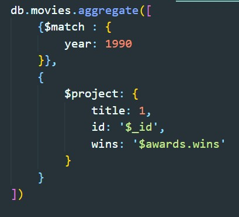
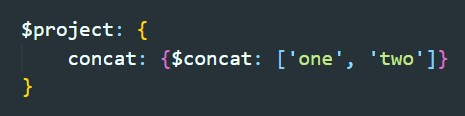

Агрегация данных в mongoDb происходит по потокам (стадиям). На каждой стадии данные могут видоизменяться и на выходе мы будем получать уже готовые данные. Каждая стадия выполняет одно простое определенное действие.
На этой стадии фильтруются документы в потоке. После этой стадии остаются только документы удовлетворяющие заданному условию. Для условий используетсчя стандартный синтаксис монго.

Преобразует каждый документ в потоке (добавляет или удаляет поля из документа коллекции)
Создание нового поля из уже имеющегося

Второй вариант создания нового поля из вложенного объекта
Третий способ преобразования поля - преобразования с помощью встроенных функций
В качестве значений могут быть как константы, так и значения полей документа
$add - сложение
$subtract - вычитание
$multiply - умножение
$divide - результат деления
$mod - возвращает остаток от деления
$concat - объединение строк 
$toLower - приводит строку к нижнему регистру
$toUpper - приводит строку к верхнему регистру
$and - получаем массив булевых значений и вернет true если все равны true
$or - вернет true если хотя бы один элемент переданного массива равен true
$not - получает массив с blybv булевым значением и вернет true если это значение равно false
Группирует документы в соответствии с выражением
В двух словах группировка, это когда мы объединяем документы в одну сущность по единому критерию (например у всех записей одна и та же дата) и по этой группе можем вывести максимальное или минимальное значение какого-то поля (например температура по цельсию)
Преобразует поле с типом массива в несколько документов
Сортировка, лимит и смещение документов. Синтаксис и поведение аналогично стандартному поведению монго